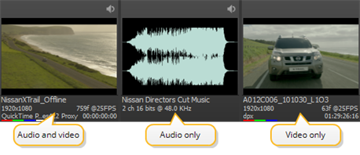
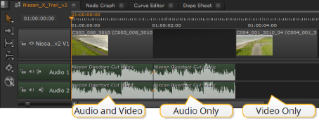
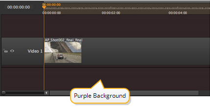

界面将剪辑分为三大类: 音频和视频、仅音频和仅视频。剪辑的显示方式因其内容、位置和当前模式而异。
注意: 时间线查看器当前将所有 alpha 通道视为预乘，这可能会导致查看器背景被 “添加” 到图像中。如果您正在处理未预乘的图像，请将查看器背景设置为 黑色 .
注意: Linux 上目前没有 QuickTime 音频支持。对音频的支持定于稍后发布。
源剪辑是磁盘上文件的表示形式。时间轴上的剪辑实例引用源剪辑，因此更改 bin 中的剪辑会影响引用该源剪辑的所有剪辑实例。

注意: 缩略图下的彩色条代表剪辑中可用的层，在这种情况下 颜色 。其他层包括 阿尔法 , 深度 ,和 运动 ,类似于 Nuke 。
剪辑实例是源剪辑的表示形式，它们不会保存在磁盘上。对剪辑实例进行更改只会影响该实例。请参阅 管理时间表 欲了解更多信息。

在时间轴视图中打开剪辑可以在源剪辑中添加输入/输出点和软效果。作为时间线打开的剪辑始终包含所有可用的帧，无法修剪。请参阅 使用输入和输出标记 和 软效果 欲了解更多信息。

|
|